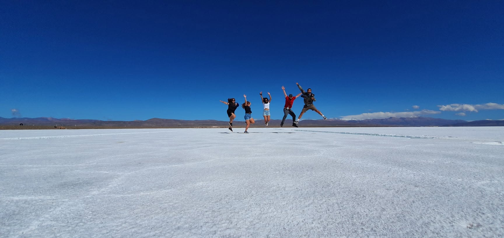
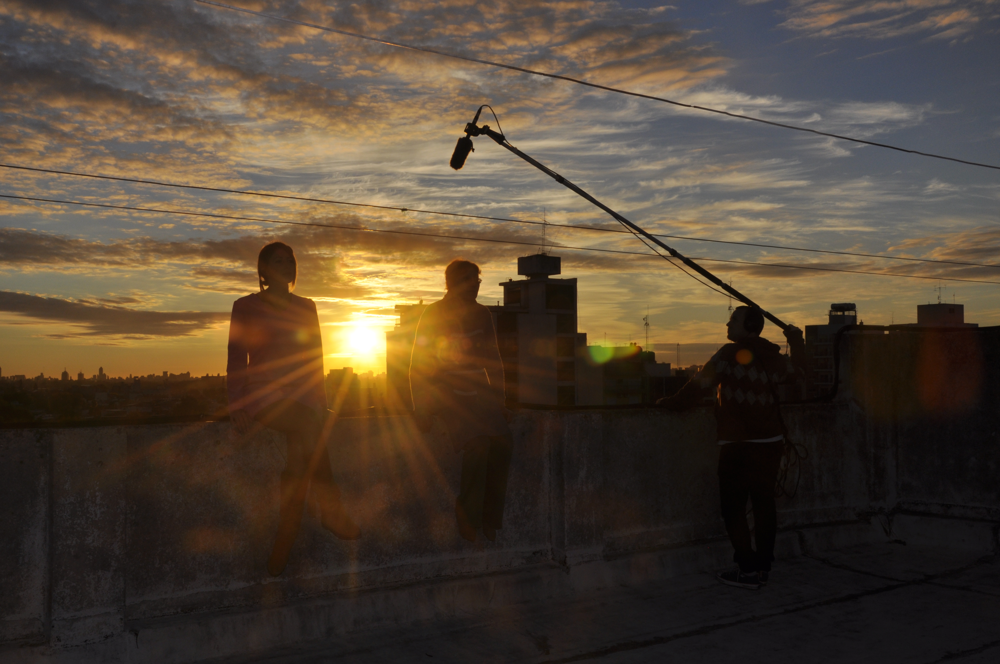
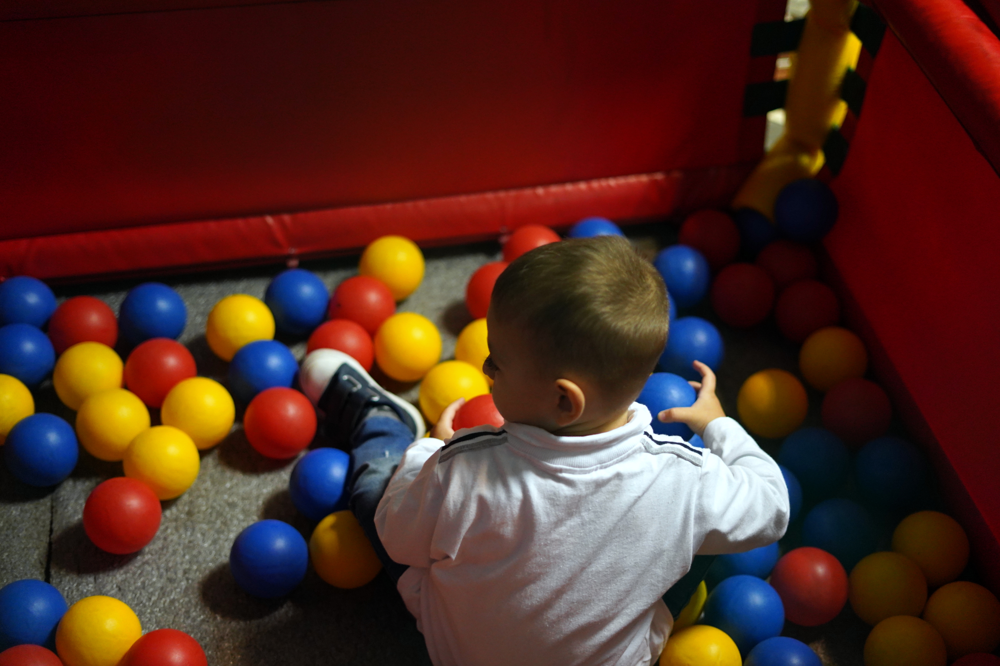
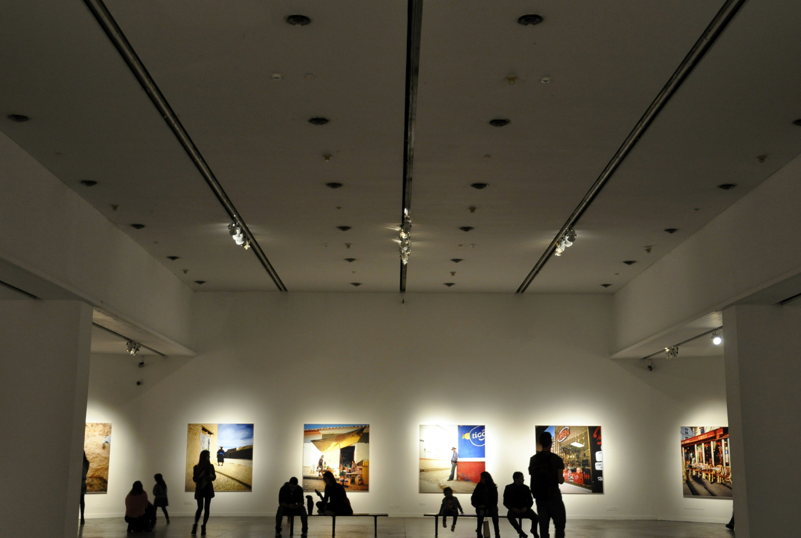
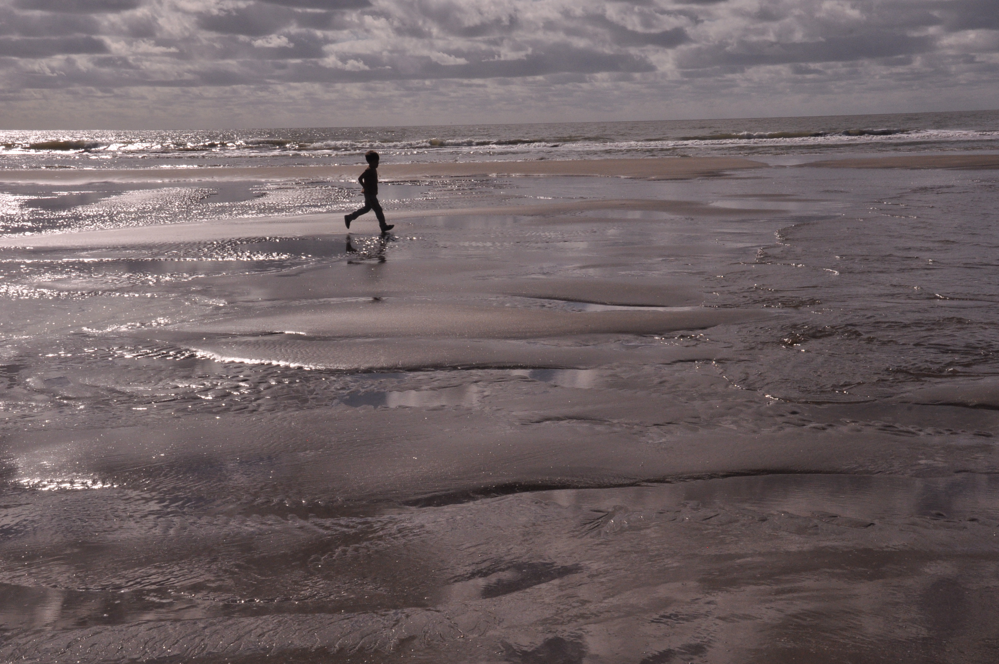

01 / Film
Cortometrajes
Realización · Asistencia de dirección · Producción
Soy Miriam Nápoli, realizadora audiovisual y fotógrafa. Trabajo con imágenes, relatos y personas para construir experiencias visuales.
EXPLORAR PROYECTOS ↘Cine, narración y desarrollo de proyectos.
Realización · Asistencia de dirección · Producción
Desarrollo narrativo · Guion · Dirección
Personas, acontecimientos y momentos que merecen ser contados.

Cobertura fotográfica.
%20(1).jpg)
Personas y momentos.
.jpg)
Historias en imágenes.
.jpg)
Retratos y momentos espontáneos.
.jpg)
Registro de acontecimientos.

Composición y mirada visual.

Una historia en cada imagen.

Personas, espacios y detalles.

Selección de trabajos.
Soy Licenciada en Producción Audiovisual, con formación en artes audiovisuales y experiencia en proyectos creativos, rodajes y cobertura fotográfica de eventos. Me interesa el cruce entre narración, imagen y nuevas tecnologías.
Para proyectos, colaboraciones y oportunidades profesionales.
mivanapoli@gmail.com